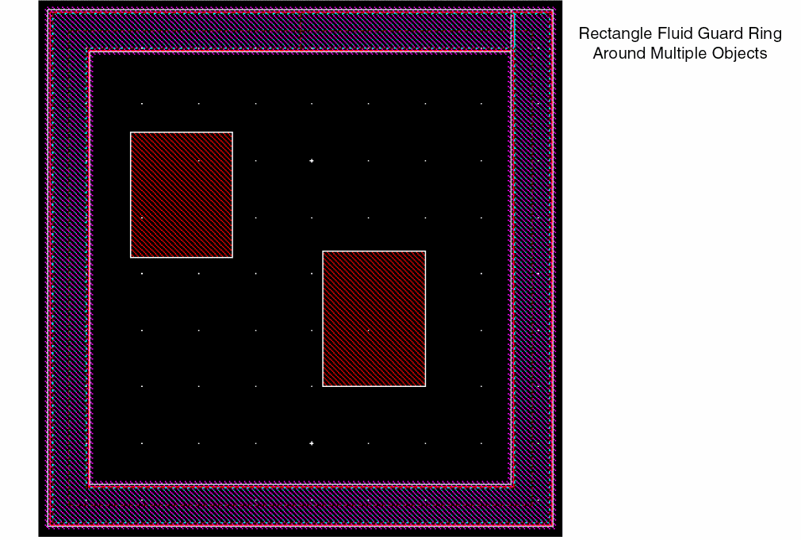

3
Creating Fluid Guard Rings
After you have installed a fluid guard ring (FGR) as a device class in the technology file, Virtuoso Layout Suite enables you to create and edit the FGRs. For more information about FGR installation, see Chapter 2, “Installing Fluid Guard Rings.”
You can create FGRs by either drawing one of the following: path, rectangle, or polygon, or by using the wrap mode. Each of these different modes are represented by a tab on the Create Guard Ring Form. You can also create FGRs as concentric rings. During FGR creation, you can specify the method for distributing contacts over the created FGR.
You can dynamically view all the shapes of an FGR while creating, stretching, or splitting it. For more information, refer to the Dynamic Display of the Fluid Guard Ring Contents section.
0 for viewing FGR layers. At Stop Level 0, an FGR is visible as an instance in the design.The layout of the Create Guard Ring form and the graphical elements visible on it can be customized using the triggers and SKILL functions specifically designed for the purpose. The following types of customizations are possible:
- Create a new Create Guard Ring form from the beginning to open and use from other Virtuoso tools like Module Generator (Modgen). (Supported from IC6.1.6 ISR6 and ICADV12.1 ISR8 onwards)
- (ICADVM20.1 Only) Change the properties of the pre-defined (system) fields or components available on the form, and create new components to suit your design requirements. (Supported from ICADV12.1 ISR5 onwards)
For more information, see Customizing the Create Guard Ring Form.
Steps to Create a Fluid Guard Ring
-
In the design window, choose Create – Fluid Guard Ring.
This opens the Create Guard Ring Form. - Click a tab based on the mode you want to use for creating the FGR. The following modes are available:
- Configure the settings for creating an instance of the FGR device.
- Configure the settings on the subtabs: Contact Settings, Implant Layers, and Outer Rings.
- Create the FGR in the selected mode:
-
At any point, press
F3to bring up the Create Guard Ring form to change settings for a mode or to change the mode. -
Press
Escor click Cancel in the form to finish creating FGRs.
Managing Visibility of Devices on Create Guard Ring Form
You can restrict users from creating FGRs using a particular device. As a result, the device will not be visible in the Device drop-down list box of each tab on the Create Guard Ring form. For detailed information, refer to the Hiding a Device from Create Guard Ring Form section.
In case, you want to use a specific device to create its instances in the layout and do not see it listed in the Device drop-down list box, it means the device is hidden. For information about making such a device visible on the form, refer to the Making a Hidden Device Visible on Install and Create Forms section.
Snapping Fluid Guard Rings to Fin Grids (ICADVM20.1 Only)
When you create an FGR for a FinFET device, the FGR instance automatically snaps to the underlying snap pattern grids if the Snap Pattern Snapping check box is selected in the
The following images illustrate the difference in creating an FGR instance when automatic snapping is enabled or disabled in Layout L:
Wrap Mode
In this mode, an FGR is created around the objects you select. The selection of the Place at Minimum Distance check box on the Wrap tab of the Create Guard Ring form identifies whether the minSpacing rule defined for the object layers, which include both original and derived layers, should be used to compute the spacing between the FGR and the object.
- Set up the options on the Wrap Tab as required.
-
Use one of the following methods to create the wrap-type FGR:
-
Click the object around which you want to create the FGR.
An FGR is automatically created around the clicked object.
-
Select an area on the layout that covers one or multiple objects.
-
Press
Shiftand click an area to select more objects to add them to the selection. -
Press
Ctrland click an object to remove it from the selection.
An FGR is automatically created around the area selected objects.
If Wrap common is on, the following parameters determine whether a common or individual FGRs will enclose the selected devices:- Distance between the devices to be wrapped around
- Path width of the FGR
- Distance of the FGR from the devices
A common FGR is created if the individual FGRs overlap and merge and Wrap common is on. To ensure you get a common FGR, you can reduce the distance between the devices or increase the Path Width or the Enclose by value. -
Press
-
Click the object around which you want to create the FGR.
If Wrap common is off, the FGR wrap-around is created around individual clicked or area selected shapes, as shown below.
If you create concentric FGRs, specify the number of required rings in the Number of Rings field on the Outer Rings subtab. For each of the Ring n field that gets added to the form, specify values in the following corresponding fields:
- Rows: Number of contact rows
- Encl: Distance between the consecutive rings
- Net Name: Name of the net to which the outer ring should be connected
The example below shows three concentric FGRs created around the central rectangular object. A part of the form shows the settings on the Outer Rings tab.

Creating an FGR Automatically
In the Auto FGR creation mode for Wrap, an FGR is created around the selected objects using the default values of the parameters specified in the FGR device definition in the technology file.
FGRs can be created in Auto mode if the vfoAssociatedDevices and vfoAssociatedRings properties are specified in the technology file. The example below shows these properties.
tfcDefineDeviceProp(
; (viewName deviceName propName propValue)
(layout pgr vfoAssociatedDevices "nmos1v;nmos1v_hvt")
(layout pgr vfoAssociatedRings "ngr;pgr")
)
If any of the above properties are specified in the technology file, and there is at least one VLS-based FGR device defined in technology file, the AUTO option is available in the Device field on the Wrap tab of the Create Guard Ring form. The FGR is automatically created based on these properties in the technology file.
vfoAssocitedRings property should be specified for creating rings of FGRs on top of another FGR. In the above figure, you can see that the fields on the Outer Rings tab are different when AUTO is selected in the Device field.
If you specify more than one outer ring, you can specify the rows and net names for subsequent rings.
You can also create an auto FGR using the SKILL function, vfoCreateAutoFGR. In addition, you can assign a bindkey to create an auto FGR. The bindkey will be associated to the SKILL function, vfoCreateAutoFGR. For example,
hiSetBindKey("Layout" "Ctrl Shift<Key>f" "vfoCreateAutoFGR")
Path Mode
In this mode, an FGR is created based on the path you draw.
- Set up the options on the Path Tab as required.
- Click to define the points of the path around the object around which you want to create the FGR.
-
Double-click or press
Enterto complete the path.
A path-shaped FGR is created around the object. You can control the width of the FGR by using the Path Width field.
Rectangle Mode
In this mode, an FGR is created based on the rectangle you draw.
- Set up the options on the Rect Tab as required.
-
Click to define the opposite corners of the rectangle around the object for which you want to create the FGR.
A rectangular FGR gets created around the object as illustrated in the images below.
You can draw a rectangular FGR around multiple objects too as illustrated in the image below.

If you installed the FGR device with the Cover Interiors check box selected for the Implant/Well layer (Layers section), the rectangular FGR enclosure is filled with the implant or well layer, as shown below.
Polygon Mode
In this mode, an FGR is created based on the polygon you draw.
- Set up the options on the Polygon Tab as required.
-
Click to define the points of the polygon.
A polygon FGR gets created.
The figure below shows an example of a polygon FGR where the polygon area is filled with the FGR device material. You can use this method to fill up spaces between objects.
While creating an FGR, you can also specify the design-rule-driven (DRD) rules that need to be checked and applied during the process. This can be done by accessing the DRD Options form through the DRD toolbar or the Options — DRD Edit menu.
Use the DRD Options form to enable the Enforce, Notify, or Post Edit mode at the current cellview, current to bottom, current to stop level, or current to user level hierarchy depth. The following image illustrates the notification displayed regarding the violation of the minimum spacing (minSpacing) rule. This notification is displayed if the minSapcing constraint is selected for Notify mode under the Filters tab of the DRD Options form.

For more information about the DRD Options form, see
Dynamic Display of the Fluid Guard Ring Contents
While creating, stretching, or splitting an FGR, you can dynamically view all the shapes associated to it. Use the Maximum Number of Drag Figures field on the Options - Display form to specify the number of shapes that can be dynamically drawn in an FGR.
The number of shapes that can be displayed in an FGR depends on the total number of shapes that exist in the FGR and the specified Maximum Number of Drag Figures.
-
If the total number of shapes in the FGR are less than maxDragFig, all the shapes on all the layers of the FGR are displayed.
-
If the total number of shapes in the FGR are more than maxDragFig, all the shapes on all the layers of the FGR are displayed, except the contacts.
maxDragFig, only the fluid shape is displayed.Technology Rules Considered During Fluid Guard Ring Creation
The following table lists the technology rules that are applicable during the creation of an FGR:
| Form Field | Applicable Technology Rule(s) (Listed in order of precedence) |
|
viaSpacing(4 …) |
|
|
minOppExtension rule (a, b) |
|
|
Maximum of |
|
Important Points to Remember
-
If a technology rule has not been defined in the technology file, but is used by an FGR, the system considers its value as zero. For example, the
minOppExtensionrule is used for identifying the enclosure values of a contact. If you do not define this rule in the technology file, while creating an FGR, the system takes the enclosure values as zero. -
If you installed the FGR device with the Cover Interiors check box as selected (that is, set to ON) for the Implant/Well layer (Layers section), the
minWidthtechnology rule is not checked at the time of creating the wrap-type and closed path-type FGRs. -
You can install an FGR device with implant layer enclosure value less than the technology default. For example, consider an FGR device in
gpdk045withOxide,cont, andMetal1as the layers (diffusion, contact, and metal respectively), andNWellas the implant. The minimum enclosure of Nwell over diffusion (Oxide) in the technology file is0.09. Despite this, you can install an FGR device using0.06(with a warning message). -
By default, when an FGR is created in the Wrap mode and the Place at Minimum Distance check box is selected, the spacing between the guard ring and the object is computed based on the
minSpacingrule defined for the object layers around which the FGR is created. The object layer includes both original and derived layers. -
When the FGR is created in the Wrap mode and the directional
minWidthrule is specified in the technology file for the main layer of the FGR, it will use the maximum value of ("horizontal" "vertical") rule. In case only one-directional rule is specified, it will use this rule for both the directions. ThetwoWidthsrule is not supported in the Wrap mode.
Using minOppExtension for Placing Contacts in the Corners of a Fluid Guard Ring
Virtuoso uses the two values defined with the minOppExtension technology rule to identify the placement of the contacts in the corners of an FGR. The technology rule values are compared with the contact enclosure values you specify using the Minimum Metal Over Contact and Minimum Diffusion Over Contact fields on the Contact Settings tab of the Create Guard Ring form.
If the contact enclosure value of any of the directions is greater than or equal to the maximum minOppExtension technology rule value, Virtuoso generates the contacts in the corners of the FGR.
However, if the contact enclosure value of any of the directions is less than the maximum minOppExtension technology rule value, Virtuoso automatically removes the following types of contacts from the corners to minimize the width of the FGR:
- Ear-vertex contacts (highlighted in red color in the image below)
-
End-corner contacts (highlighted in yellow color in the image below)
The following images illustrate FGRs where Virtuoso automatically removed the contacts from the corners:
If you have defined the minOppExtension technology rule in the technology file, Virtuoso uses the defined values to identify the distance on one side and the other side of the contacts placed in the corner of the FGR. For example, assume that your technology file contains the following definition:
( minOppExtension "Oxide" "Cont" (0.02 0.05) 'ref "CONT.E.2&3" 'description "Minimum Oxide to Contact Enclosure" )
( minOppExtension "Metal1" "Cont" (0.02 0.05) 'ref "CONT.E.2&3" 'description "Minimum Metal1 to Contact Enclosure" )
In this context, you can consider 0.02 as the minimum value and 0.05 as the maximum value. So, the W and L text boxes adjacent to the Minimum Diffusion Over Contact and Minimum Metal Over Contact fields can have either of these two values. If W has a value equal to or greater than the minimum value, but less than the maximum value, L should have a value greater than or equal to the maximum value, or vice versa. The following equation illustrates this effect of the minOppExtension technology rule on W and L values:
By default, W will be populated with the minimum value (0.02) and L will be populated with the maximum value (0.05).
Customizing the Create Guard Ring Form
The following sections describe the ways of customizing the Create Guard Ring form:
- Creating a New Create Guard Ring Form (in IC6.1.8 and ICADVM20.1 releases)
- Modifying the Create Guard Ring Form (ICADVM18.1 Only)
Creating a New Create Guard Ring Form
The Create Guard Ring form launched from the layout editor is an option-type form that displays the Hide, Cancel, and Defaults buttons. However, if you prefer to use a standard-type form with OK, Cancel, and Apply buttons, you have the flexibility to create such a Create Guard Ring form. The standard-type can be run from other Virtuoso applications, like Module Generator (Modgen) and Constraint Manager.
The following steps summarize the Create Guard Ring form creation process:
-
Define a new form pointer along with unique fields and form symbol using the vfoGRNewCreateForm SKILL function.
vfoGRNewCreateForm (
Here,uniqueFormIdentifierformType@optional callbackList)
uniqueFormIdentifierargument is an alphanumeric string that gives the name of the form to be used for generating the unique field names. If the specified form name already exists, the SKILL function returnsniland generates an error prompting you to create the form using anotheruniqueFormIdentifiervalue.
formTypeargument accepts only'OKCancelApplyor'HideCancelDefas arguments that define whether the form should be of standard or options type, respectively. Currently, if you choose to create a standard-type form, you can create an FGR only in Wrap mode.
callbackListargument is optional. It can be used to list the names of callback procedures for OK, Cancel, and Apply buttons. The callback list should be provided in the following format:callbackList = list (
sprintf (nil "_defineCB ()")
)
-
Register the customization procedure using the vfoGRRegCreateFormUpdateCallback SKILL function, which has the following syntax:
vfoGRRegCreateFormUpdateCallback(
The corresponding procedure will be called for the particular form pointer after theformPointerprocedureName@optional callbackList )vfoGRUpdateCreateForm(form)trigger is called.
The following is an example of the above steps:
; create the new Create Guard Ring form and store its form pointer
form_modgen = vfoGRNewCreateForm ("MODGEN" 'OKCancelApply)
; register the callback for the given form pointer
vfoGRRegCreateFormUpdateCallback (form_modgen "vfoCustomize_modgen")
; define the callback
procedure (vfoCustomize_modgen (formPointer
; write your own method body here related
; to Create Guard Ring form updates
)
hiDisplayForm (form_modgen)
The following figure visually depicts this type of customization of the Create Guard Ring form:
Modifying the Create Guard Ring Form (ICADVM20.1 Only)
The ability to modify the Create Guard Ring form provides you the control over the existing system-defined GUI components. It also enables you to add new user-defined GUI components, such as fields and buttons, and define callbacks for the specific ones you want to use on the form.
The process of modifying the Create Guard Ring form can involve the following actions that are performed using triggers and supporting SKILL functions:
- Adding New User-Defined GUI Components to the Form
- Updating the Existing GUI Components on the Form, for example:
- Updating Properties of User-Defined GUI Components
Detailed information about this process along with examples can be found in the following application notes available on the
Adding New User-Defined GUI Components to the Form
To add new user-defined GUI components to the Create Guard Ring form, do the following:
-
Write a procedure to define the
vfoGRAddCreateFormFieldstrigger. -
Use the
hiCreate*functions to add new GUI components on the Create Guard Ring form. -
Set the GUI component to a specific location on the form.
In the Create Guard Ring form, there are multiple global lists that enable you to add various form components. The common global list (also called common queue) defines the set of form components that are displayed on all four tabs (Wrap, Path, Rect, and Polygon) of this form. For example, the GUI components, such as Technology, Device, and Contact Rows, that are common on all tabs exist in the common queue area. To add a new component in this area, use thevfoGRAddFieldsInCommonQqueue.
However, if you want to update the GUI components visible only on a specific tab of the Create Guard Ring form, use the following queues: -
Use the vfoGRSetExtraArgument SKILL function to make the data available for processing by
extraArgumentsin the FGR infrastructure that resides in Virtuoso.
Each element of the associative list is a ‘keykeyis the name of the FGR device parameter andvalueis the value associated to it, that is,((<FGR_device_parameter_name> <value_of_GUI_component>) ...)
Updating the Existing GUI Components on the Form
To update the GUI components that are currently displayed on the Create Guard Ring form, do the following:
-
Write a procedure to define the
vfoGRUpdateCreateForm(<formPointer>)trigger, where formPointer is a pointer to the Create Guard Ring form. -
Hide existing default fields from the form by using the vfoGRSetCreateFormAllFieldsInVisible SKILL function.
You can use the vfoGetImplementationClassName SKILL function to identify the implementation class of different devices and hide the form fields only when the implementation class is notvfoGuardRing. -
Reset the properties of the fields or components displayed on the form by using the vfoGRSetCreateFormFieldProp SKILL function. It supports the use of the following property values:
value,defValue,editable, andinvisible.
Updating Properties of User-Defined GUI Components
If you add a user-defined GUI component in the common queue, you can access its pointer using the vfoGRGetCommonQPtr SKILL function to get or set the properties of its component. For example, to set the property of a newly added form field, UserSelectVertWidth, you can write the following procedure:
procedure( setCreateFormUserFieldProp(actField promptString property value)
let(( newField )
importSkillVar(vfoGRAddFieldsInCommonQ)
evalstring( sprintf( nil "vfoGRGetCommonQPtr()->%s->%s = %s"
UserSelectVertWidth->hiFieldSym property value )
)
))
Return to top